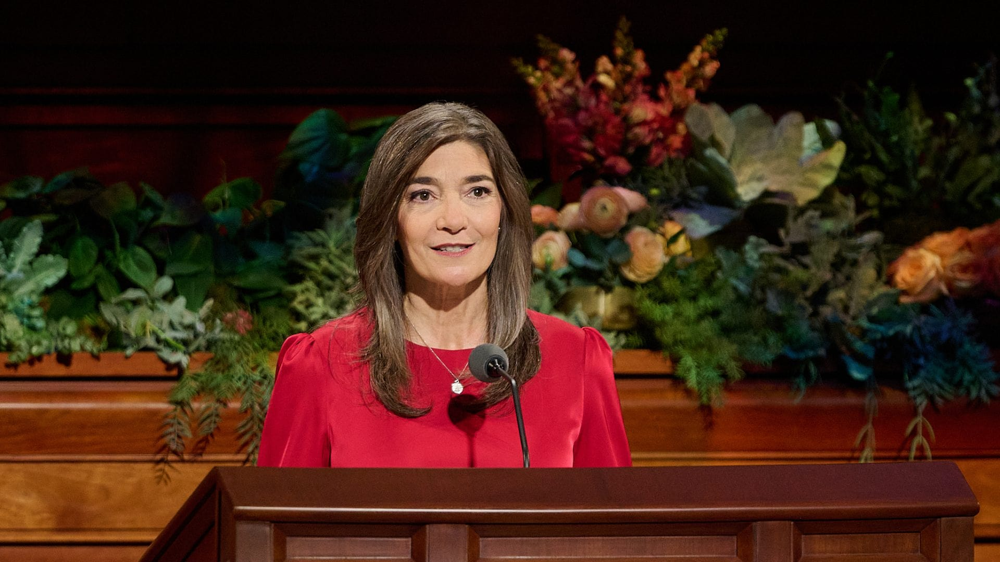
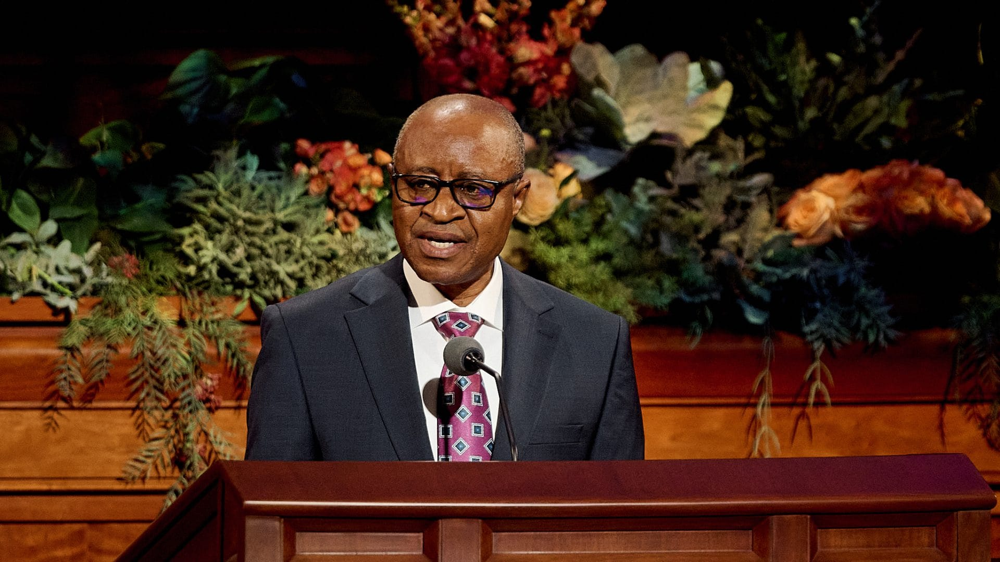
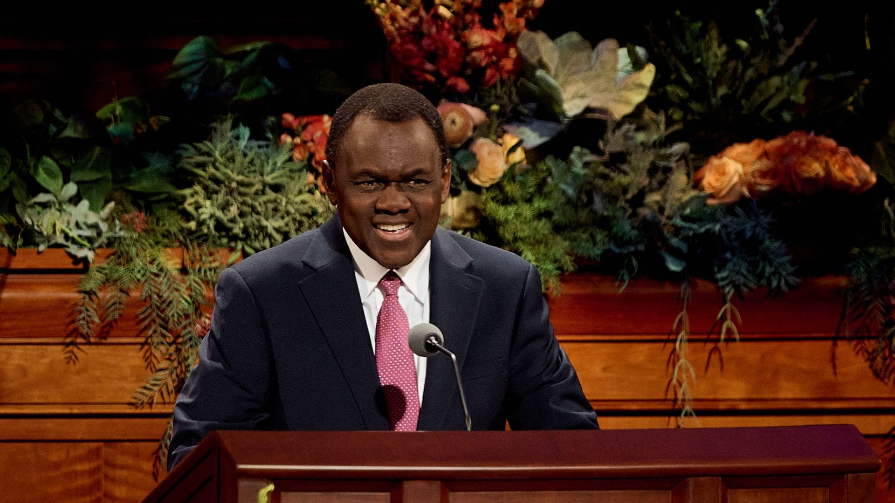

Here are some of my favorite talks from the General Conference:

Sister Andrea Muñoz Spannaus reminded me that I can look toward my future with confidence because Heavenly Father knows me, loves me, and will guide me along the way. I especially appreciated the seven practices she shared, because they are simple things I can apply in my everyday life. Sincere sacrament worship, repentance, scripture study, getting enough sleep, limiting phone use, and building faithful friendships can help me stay close to Heavenly Father and make better choices. Her message reminded me that preparing for my future is not only about achieving my goals, but also about becoming the person Heavenly Father wants me to be.

Elder Alfred Kyungu reminded me of the importance of being careful with the words I use. His message encouraged me to follow prophetic counsel by avoiding words that may hurt, discourage, or divide others. I was especially touched by his reminder that simple words of appreciation, forgiveness, and reassurance can make a big difference in our relationships. It made me realize that my words have the power to either hurt someone or bring them peace. I want to be more intentional about speaking kindly and using my words to strengthen the people around me.

Elder Edward Dube reminded me that I do not have to be perfect before coming to Jesus Christ. Instead, it is through the Savior that I can change, grow, and become better. This message gave me comfort because sometimes I feel like I need to have everything figured out before I can come closer to Him. I was also touched by his invitation to help others develop faith in Jesus Christ. It reminded me that I can come unto the Savior myself while also encouraging and supporting the people around me on their own journey of faith.